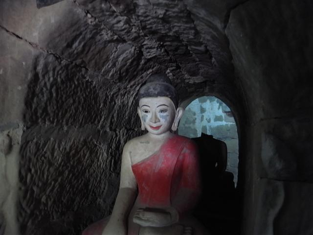
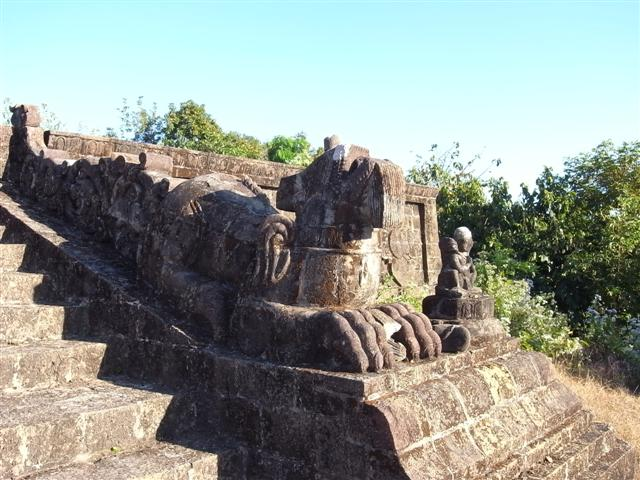
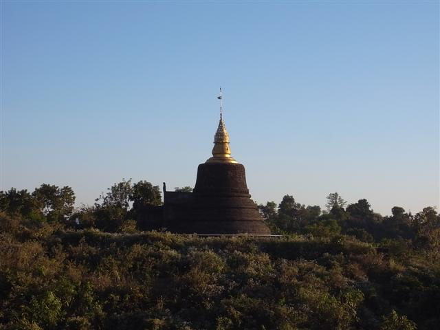

早上天氣仍冷，我行到 Golden Star Guest House 的「餐廳」，那張放在正門入口園地的檯，還未有客人坐，但旅館的人已經在廚房忙著。我坐下，露水由旁邊的樹滴下到檯面上。昨晚請我吃飯的女人拿來傳統早餐，她是這旅館的經理，另外一位很年輕的小伙子，他應該是經理的兒子，端來咖啡和煉奶。
不久後一對男女來到，男的是西方人樣子，女的就樣個日本人。他們是 Jim 和 Lin，一對老夫婦，美國公民，Lin 原來是中國人，但她很早就離開中國，去了南美生活，不懂中文。
他們之前也是住在 Golden Star 的，Lin 靜靜地告訴我她受不了這裏的房，所以搬了去另一間，叫做 Waddy Htut Guest House，但因為 Waddy Htut 沒有早餐（竟然），所以回來付錢吃。Jim 好像有點不適，要回旅館休息，早餐後 Lin 帶我參觀他們住的旅館，說差不多價錢但好得多。她佷熱心，好像認定我和她一樣不會喜歡 Golden Star。
Waddy Htut 的確是很「企理」，不過一來沒有早餐，二來最重要是這裏氣氛不及 Golden Star，所以我不打算搬走。因為 Jim 生病，Lin 約我一起去行市集。我回到 Golden Star 執拾一會，預上剛才一起傾計的導遊，得知回 Sittwe 的早船要先買票，於是請他和我們一起去市集買票。
我們去到市集附近的一個街角，那裏有一張木檯，就是船公司的售票處了！不過還未開門，導遊為我們用緬甸文寫下我們要買何時的票，方便我們晚上再來買票。
在這「售票處」，一個男人走過來，要我抄下他的名字和地址，說他是收集各地明信片的人，要我寄給他，Lin 拉著我說這個人腦子有點問題的。不過我也會寄給他的。
我們行完市集，我便行去北面古蹟群，Mrauk U 古蹟分散四周，最好是騎單車，不過，北面的一堆較集中，我今天只看這些，徒步便可以。
Mrauk U 有「小 Bagan」之稱，不過這裏的遊客很少，商店食店不多。這裏的古蹟特別，不是金色反而是黑黑的，有些更像個大鐘，有些像個城堡。我喜歡這些石的顏色多於金色。
Sakyamanaung Paya 是我第一個看的 Paya，我不知是因為喜歡黑色或石色，還是我喜歡這裏的環境，但我看見它們的感覺和看其他地方的古蹟很不同，比起 Bagan，我更感到自己是在參觀古蹟，而不是廟宇，或旅遊勝地。
我和 Lin 分開，行到城中心的北面，看完 Sittaung Paya、Andaw Paya、Ratanabon Paya 之後，去到廣闊山谷的交叉點，這裏我重遇法國老人，他騎著單車，說那邊有個藝術家畫畫。
我行到路口的一個很大的古蹟 Dukkanthein Paya，裏面很黑，但這東西最有趣，裏面只得一條隧道，沿著它行其實是打圈進入中心，沿路兩旁有很多佷多的石雕。因為黑，加上那些石像，都頗嚇人的，行行下突然一亮，原來這裏有燈的！只不過剛才還在停電中。
附近有些食檔，食檔前有檔像炸天婦羅之類，我叫了炸蝦，坐在那些矮到貼地的小椅，我好像很怪相，當地人看著我覺得很好笑。吃完炸物到對面喝椰子汁。這就是午餐了，十分之好。
之後我整個下午就是在這個山谷渡過。先到藝術家看他的作品，和他傾談，然後行到各山頭，有些路頗難行，因為只穿了對拖鞋，沙泥很滑，陽光又強，行到汗流浹背。
我走到最北面的地方，那裏有些城牆的遺跡。回望這個山谷，古蹟分散在平地或山頭上，山邊有些田地，田地附近有牛，有水井，不遠處有村民生火的煙飄起，很美麗的景象。若果這地方「被發展旅遊」，這些村將不存在。
發覺已經到日落時間，匆匆走上藝術家推介的「看日落點」，上面已經有數個人，我認得有三個是昨天飛機坐我旁邊的德語人，另外兩個西方人，一個外形有趣，有點像麥當勞叔叔頭，再加黑白橫條衣的漢堡神偷身。
我站到一旁，一個黑超長髮男人和我打招呼，他叫 Rocky，自稱是「導遊兼考古學家」，我半信半疑，他向我講解周圍古蹟的結構，例如 Andaw Paya 哪一部分是修建過的，哪一部分是原本的，說得頭頭是道。麥當勞叔叔和另一位西方人走過來打招呼，原來 Rocky 是他們的導遊。
他們叫 Mark 和 Oriana，是香港來的！怎麼有這麼多由香港來的西方人的呢？他們從事設計，很友善的人，知道我會去 Chin Village，邀請我明天一起去，我只需付船費便行，因為其他費用他早已付了給 Rocky。沒想過這麼幸運。
相約好之後我們離開，Rocky 載我到旅館附近下車，我走到市集附近的船公司「櫃檯」，買了回 Sittwe 的快船票，只用 15 美元，現在 Sittwe 和 Mrauk U 間的交通已經大大改善了。
這夜在一家叫 Pyae Wa Restaurant 的店吃晚餐，這店的咖哩蝦很美味。
Golden Rock Guest House
傳統早餐

Sakyamanaung Paya
Sittaung Paya
Andaw Paya
Ratanabon Paya
Dukkanthein Paya

Laymyetnha Paya
直昇機場



